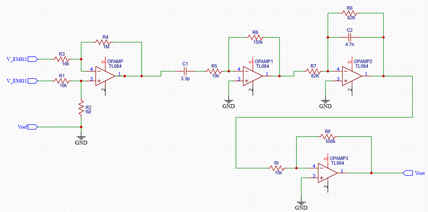
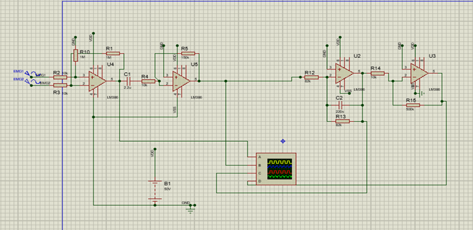
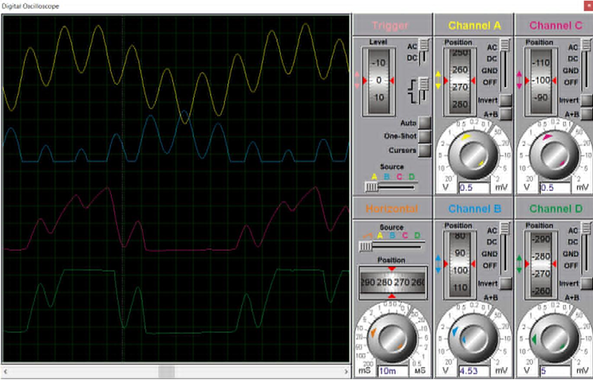

Course Project – Biomedical Electronics | VNUHCM - University of
Science
Team size: 5 | My role: Team Leader
This was a final project for the Biomedical Electronics course in the
Electronics Engineering program.
Project Overview:
- Designed and built an analog circuit capable of measuring both electromyography
(EMG) and electrocardiography (ECG) signals.
- The circuit was implemented on a breadboard and utilized adjustable capacitors to
tune the frequency response.
- Users could switch between EMG and ECG signal acquisition by changing capacitor
values to match signal frequency ranges.



My Contributions:
- Led a 5-member team: defined objectives, assigned tasks, and maintained progress
tracking.
- Designed and implemented the core analog circuitry for EMG and ECG signal
acquisition.
- Calculated appropriate capacitor values to filter the desired frequency bands for
both EMG (typically 20–500 Hz) and ECG (0.05–150 Hz).
- Ensured signal clarity and minimized noise through layout optimization and component
selection.
Results:
- The final breadboard prototype successfully measured and visualized both EMG and ECG
signals.
- Switching between EMG and ECG modes was done simply by swapping specific capacitor
values.
- Received excellent feedback and high evaluation from the instructor for innovation
and execution.
← Back to All Projects